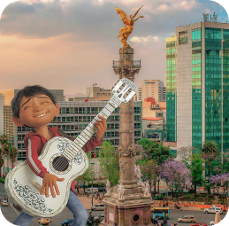
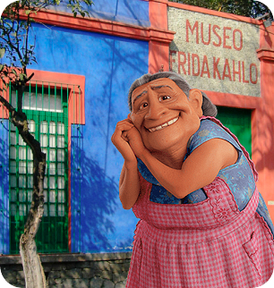
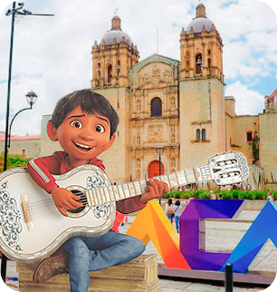
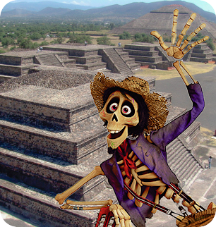
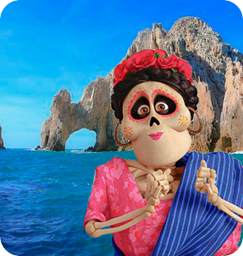

México
O México tem uma paisagem diversificada, formada por montanhas, desertos e selvas. Suas antigas ruínas, de origem asteca e maia, são encontradas em todo o país, assim como as cidades espanholas da época colonial. Tudo isso faz do território mexicano um cenário cheio de tradições, arte, histórias e belas praias, agraciado ainda por um menu gastronômico que varia a cada região.
Pontos Turísticos

Museu Frida Kahlo
Londres 247, Del Carmen, Coyoacán, 04100 Ciudad de México, CDMX, México
Sobre: O Museu Frida Kahlo, também conhecido como Casa Azul por conta da estrutura de paredes azul-cobalto, é um museu-casa histórico e museu de arte dedicado à vida e à obra da artista mexicana Frida Kahlo. Está localizado no bairro Colonia del Carmen de Coyoacán, na Cidade do México.
Valor do Ingresso: 220 pesos
Duração: 30 min
Horário de Funcionamento: 10h às 17:47h
Melhor época para visitar: Entre os meses de Maio e Agosto

Oaxaca de Juárez
Oaxaca de Juárez, México
Sobre: Oaxaca de Juárez é a capital do estado de Oaxaca fica ao sul do México. No feriado de o dia de los muertos a cidade fica toda decorada para uma das celebrações mais conhecidas da cidade do México. Em todos os lugares pessoas celebram os seus antepassados com muita comida e alegria.
Valor do Ingresso: Gratuito
Duração: 2 dias
Horário de Funcionamento: Livre
Melhor época para visitar: Fim de Fevereiro

Ruinas de Teotihuacan
San Juan Teotihuacan 55800, México
Sobre: Nas proximidades da Cidade do México, Teotihuacán foi construída por uma civilização antecessora dos Maias e Astecas, os chamados Teotihuacanes, que lá estiveram por volta de 100 A.C.
Valor do Ingresso: 80 pesos
Duração: 1 hora
Horário de Funcionamento: 09:00 - 17:00
Melhor época para visitar: Qualquer época do ano

Arco de Cabo San Lucas
Cabo San Lucas, Baja California Sur, México
Sobre: O Arco do Cabo San Lucas (Lands End em inglês) é uma formação rochosa no extremo sul do Cabo San Lucas, que é também o extremo sul do México, na Península da Baixa California. Muitos vêem que o aspecto é de um Triceratops tomando água. O famoso arco separa o Golfo da Califórnia do Oceano Pacífico.
Valor do Ingresso: Gratuito
Duração: 1 hora
Melhor época para visitar: Verão